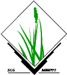
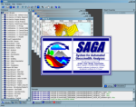

How to import and visualize GIS data in
Diego J. Lizcano
13 March 2013
is not a GIS
- However it is able to handle GIS data and do more.
- R integrates very well with:
- GRASS  SAGA  and QGIS

- You can run R inside ArcGIS 10 (but not the opposite)
- Using R for GIS can be
hard
at the beginning
- command line interface
R and GIS
- Not interactive (poor mouse selection)
- Poor visualization (but improving)
- R is very powerful in data analisys
- A huge ecosystem of packages
- R is ideal for automatization of repetitive tasks
- If you already know Phyton, R will be easy
Some basic data manipulation, Using Points
#### Points #####
## read TEAM DATA from Volcan Barva, Costa Rica
require(repmis) # to get data from drop box
data <- repmis::source_DropboxData("VB_Mammals.csv", "3dt9q31xovo0g5j", sep = ",",
header = TRUE)
head(data) # see what we have
# calculate midle point
meanLat <- mean(data$Latitude) - 0.05
meanLong <- mean(data$Longitude)
location <- c(meanLong, meanLat)
# Plot all
plot(x = data$Longitude, y = data$Latitude, asp = 1) # Boring !
Using ggmap
## more elaborated map using ggmap
require(ggmap) # same as ggplot2 but for maps
wmap1 = qmap(location, zoom = 11) #Get a base map from google with location in the center
wmap2 <- wmap1 + geom_point(data = data, aes(Longitude, Latitude), size = I(2),
color = "red", na.rm = TRUE)
# add the kernel of number of register arround the points
wmap3 <- wmap1 + stat_density2d(aes(x = Longitude, y = Latitude, fill = ..level..,
alpha = ..level..), bins = 10, data = data, geom = "polygon", alpha = I(0.5),
show_guide = F, na.rm = TRUE)
# add the point on top
wmap4 <- wmap3 + geom_point(data = data, aes(Longitude, Latitude), size = I(2),
color = "red", na.rm = TRUE)
# add titles
wmap5 <- wmap4 + theme_bw() + labs(x = "Longitude", y = "Latitude") + ggtitle("Volcan Barva")
print(wmap5)
Lets use poligons, importing shape files
## Load required packages
require(sp) # import and export shp
require(maptools)
library(RColorBrewer)
library(classInt)
## set the working directory, unzipped files
## setwd('C:\Users\Diego\Documents\GitHub\R_as_GIS\NEW\data')
## load the shapefile
forest <- readShapePoly("C:/Users/Diego/Documents/GitHub/R_as_GIS/NEW/data/forest_types.shp")
plot(forest)
## have a look at the attribute table headings
names(forest)
length(forest$GROUP) # number of forest types
(labs <- forest$GROUP) # see the labels of forest types
## select a colour palette and the number of colours you wish to display.
colours <- brewer.pal(8, "Greens")
# plot the map again
plot(forest, col = colours, axes = T)
## we can add: a title:
title(paste("Forest Volcan Barva"))
## a legend
legend(x = 835000, y = 1170000, legend = leglabs(labs), fill = colours, bty = "n",
cex = 1, ncol = 1)
## a north arrow:
SpatialPolygonsRescale(layout.north.arrow(1), offset = c(812000, 1150000), scale = 6000,
plot.grid = F)
## a scale bar:
SpatialPolygonsRescale(layout.scale.bar(), offset = c(832000, 1121000), scale = 10000,
fill = c("transparent", "black"), plot.grid = F)
## and some annotations:
text(834000, 1122300, "10KM", cex = 1)
text(835000, 1120000, "Data by TEAM 2013", cex = 1)
Changing projection
require(rgdal)
summary(forest) # notice no projection, but see forest.prj
# lets define projection
utm16n <- CRS("+proj=utm +zone=16 +datum=WGS84")
proj4string(forest) <- utm16n
### take a look to http://spatialreference.org
latlon <- CRS("+proj=longlat +datum=WGS84")
forest_g <- spTransform(forest, latlon)
Overlay
campoints <- as.data.frame(cbind(data$Longitude, data$Latitude)) #extract the points from data
colnames(campoints) <- c("lon", "lat")
# change from data frame to Object of class SpatialPoints
coordinates(campoints) <- c("lon", "lat") #
proj4string(campoints) <- latlon
ov <- over(forest_g, campoints, fn = sum)
photoxforest <- cbind(as.data.frame(labs), ov)
photoxforest
Using the Package Raster
require(raster) # an important Package !!!
library(rasterVis)
require(adehabitat)
require(SDMTools)
### import ASCii to Raster object in UTM
aspect <- raster("C:/Users/Diego/Documents/GitHub/R_as_GIS/NEW/data/aspect100m_cl.txt")
slope <- raster("C:/Users/Diego/Documents/GitHub/R_as_GIS/NEW/data/slope100m_cl.txt")
canopy <- raster("C:/Users/Diego/Documents/GitHub/R_as_GIS/NEW/data/canopy100m_cl.txt")
elev <- raster("C:/Users/Diego/Documents/GitHub/R_as_GIS/NEW/data/elev100m_cl.txt")
edge <- raster("C:/Users/Diego/Documents/GitHub/R_as_GIS/NEW/data/edge100_cl.txt")
projection(aspect) <- utm16n
projection(slope) <- utm16n
projection(canopy) <- utm16n
projection(elev) <- utm16n
projection(edge) <- utm16n
### chk
plot(aspect)
plot(slope)
plot(canopy)
plot(elev)
plot(edge)
##### descriptive statistics
summary(canopy)
all_layers <- stack(elev, slope, aspect, edge, canopy) ## stack all
plot(all_layers) # chk
spplot(all_layers) ## otra visualiz
##### more statistics
histogram(all_layers)
pairs(all_layers)
##### some more visualizations
persp(elev)
contourplot(elev)
levelplot(elev)
densityplot(elev)
#### spatial autocorrelation
Moran(elev)
elev.moran <- MoranLocal(elev)
plot(elev.moran)
Exporting, importing
writeraster(hill, filename = "C:/Users/Diego/Documents/GitHub/R_as_GIS/NEW/data/hillshade.grd")
all_layers_table <- as.data.frame(all_layers) ### convert to data frame
write.csv(all_layers_table, file = "D:\\TEAM\\Data\\VB\\covariatesLayers\\ToJorge\\NewRasters\\all_layers.csv")
# Read result from Jorge's analysis. Data coming as data frame or vector
result <- repmis::source_DropboxData("mapdata_result.csv", "6zyyeksa5tbg1de",
sep = ",", header = TRUE)
map <- elev # copy elev format on map
map[] <- result$occ_Tapir # drape occ_Tapir on map
map@data@names <- "Tapirus" # change name
Tapir <- map
map[] <- result$occ_Leopar # drape occ_Leopar on map
map@data@names <- "Leopardus" # change name
Leopar <- map
map[] <- result$occ_Maz # drape occ_Mazama on map
map@data@names <- "Mazama" # change name
Mazama <- map
## simple visualization 1 map as image
image(Tapir, col = cm.colors(length(unique(Dasyp))))
plot(Tapir, ) #plot as map
all_sp <- stack(Tapir, Leopar, Mazama) #stack all
plot(all_sp, nr = 1) #view on 1 row
# view in lattice
spplot(as(all_sp, "SpatialGridDataFrame"), col.regions = rev(terrain.colors(255)))
## special for Jorge To view in ggplot (Not efficient for large rasters,
## but nice!): you need to convert your RasterLayer to a data.frame, but
## 1st you need to convert it to a SpatialPixelsDataFrame
r.spdf <- as(Mazama, "SpatialPixelsDataFrame")
r.df <- as.data.frame(r.spdf)
head(r.df)
# then you can use ggplot2 to plot that object
library(ggplot2)
g <- ggplot(r.df, aes(x = x, y = y)) + geom_tile(aes(fill = Mazama)) + coord_equal()
print(g)
### Export to ArcGis for easy editing first convert matrix in asc, then
### export
Tapir.m <- asc.from.raster(Tapir)
export.asc(x = Tapir.m, file = "D:\\TEAM\\Data\\VB\\covariatesLayers\\ToJorge\\NewRasters\\Tapir_pred.asc")
Leopar.m <- asc.from.raster(Leopar)
export.asc(x = Leopar.m, file = "D:\\TEAM\\Data\\VB\\covariatesLayers\\ToJorge\\NewRasters\\Leopardus_pred.asc")
Mazama.m <- asc.from.raster(Mazama)
export.asc(x = Mazama.m, file = "D:\\TEAM\\Data\\VB\\covariatesLayers\\ToJorge\\NewRasters\\Mazama_pred.asc")
Some additional packages
- Data management: sp, rgdal, maptools
- Integration with other GIS: rgdal, RArcInfo, RgoogleMaps, spgrass6, RPyGeo
- Geostatistics: gstat, geoR, geoRglm, spBayes, spatstat, splancs, spatialkernel
- Disease mapping: Cluster, spgwr, glmmBUGS, diseasemapping
- Spatial regression: spdep, spatcounts
- Habitat model, Species distribution: adhabitat, dismo, SDM
New promising pakcages
- LandSat
- Analyzing Remote Sensing Data in R: The landsat Package
- MODIS
- http://www.r-bloggers.com/modis-r-package-tutorial/
Thanks
# This presentation was made in R using Knitr, pandoc and reports